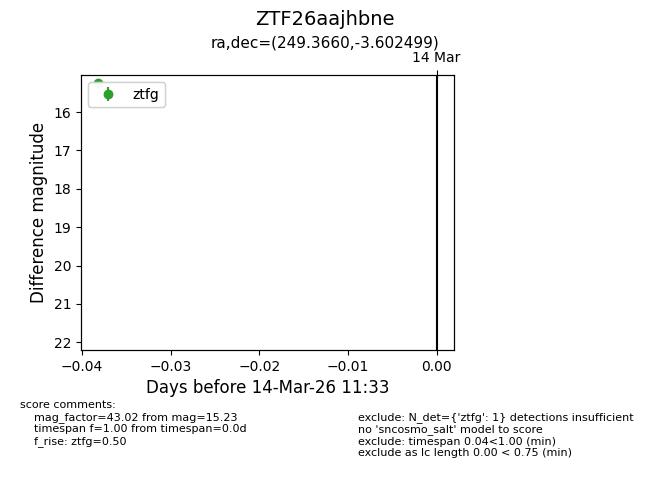
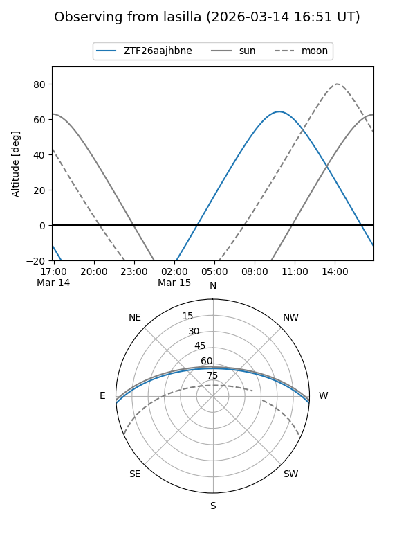
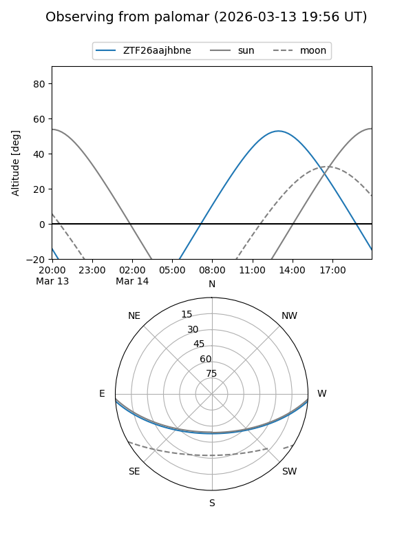

ZTF26aajhbne
Target ZTF26aajhbne at 2026-03-14 11:34
Aliases and brokers:
FINK: link
Lasair: link
ALeRCE: link
alt names
ZTF26aajhbne (ztf,fink_ztf)
Coordinates:
equatorial (ra, dec) = 249.3660,-3.60250
equatorial (HMS+DMS) = 16:37:27.84,-03:36:09.00
galactic (l, b) = (12.6817,+27.48466)
Flags:
Photometry:
last ztfg=15.23
1 ztfg detections
Lightcurve

Visibility


Additional plots